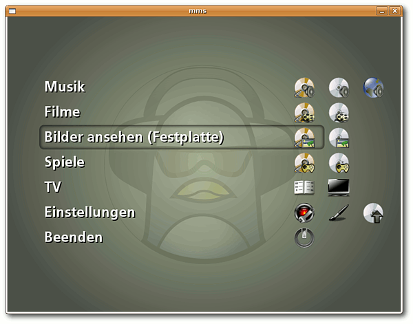

Kompilieren
Zum Verständnis dieses Artikels sind folgende Seiten hilfreich:
Möchte man die Module selbst wählen und sich eine eigene, angepasste Version von MMS erstellen, muss man das Programm selbst kompilieren. Um dies tun zu können, müssen zunächst einige Pakete installiert [1] werden.
autoconf
gettext
libtool
libimlib2-dev
libpcre3-dev
libsdl1.2-dev
libsqlite0-dev
libtag1-dev
libxss-dev
liblircclient-dev (für Lirc-Unterstützung optional)
libalsaplayer-dev (universe - für Audioausgabe über Alsaplayer (Standard) )
libxine-dev - für Audioausgabe über Xine (optional )
mplayer (multiverse - für Videoausgabe über MPlayer)
 mit apturl
mit apturl
Paketliste zum Kopieren:
sudo apt-get install autoconf gettext libtool libimlib2-dev libpcre3-dev libsdl1.2-dev libsqlite0-dev libtag1-dev libxss-dev liblircclient-dev libalsaplayer-dev libxine-dev - für Audioausgabe über Xine mplayer
sudo aptitude install autoconf gettext libtool libimlib2-dev libpcre3-dev libsdl1.2-dev libsqlite0-dev libtag1-dev libxss-dev liblircclient-dev libalsaplayer-dev libxine-dev - für Audioausgabe über Xine mplayer
Wenn dies geschehen ist, lädt man die aktuellste Version von MMS von der Homepage  herunter und entpackt [2] das Paket ins Homeverzeichnis. Nun öffnet man ein Terminal [3] und wechselt in den soeben entpackten Ordner. Hier kompiliert [4] man das Programm.
herunter und entpackt [2] das Paket ins Homeverzeichnis. Nun öffnet man ein Terminal [3] und wechselt in den soeben entpackten Ordner. Hier kompiliert [4] man das Programm.
Hinweis:
Standardmäßig gibt MMS Audiodateien über Alsaplayer und Videodateien über MPlayer wieder. Möchte man diese Einstellungen ändern, so muss man beim Befehl ./configure die entsprechenden Optionen angeben [5]. Benutzt man außerhalb von MMS den MPlayer nicht, dann genügt es, das Paket mplayer-nogui (multiverse) zu installieren. Dies ist der komplette Player ohne eigene grafische Oberfläche.
Falls es mit dem Start der selbstkompilierten Version Probleme gibt, muss man noch dafür sorgen, dass man als normaler Benutzer auf das Konfigurationsverzeichnis in /etc/mms Zugriff hat. Dazu ändert man die Zugriffsrechte für diesen Ordner mit dem Befehl chown im Terminal:
sudo chown -R $user:users /etc/mms
Die Variable $user wird dabei automatisch durch den Namen des gerade angemeldeten Benutzers ersetzt. Anschließend lässt sich MMS mit dem Aufruf
mms
im Terminal oder mit der Tastenkombination Alt + F2 starten. Eine Verknüpfung mit dem Menü [5] kann natürlich auch erstellt werden.

- Erstellt mit Inyoka
-
 2004 – 2017 ubuntuusers.de • Einige Rechte vorbehalten
2004 – 2017 ubuntuusers.de • Einige Rechte vorbehalten
Lizenz • Kontakt • Datenschutz • Impressum • Serverstatus -
Serverhousing gespendet von